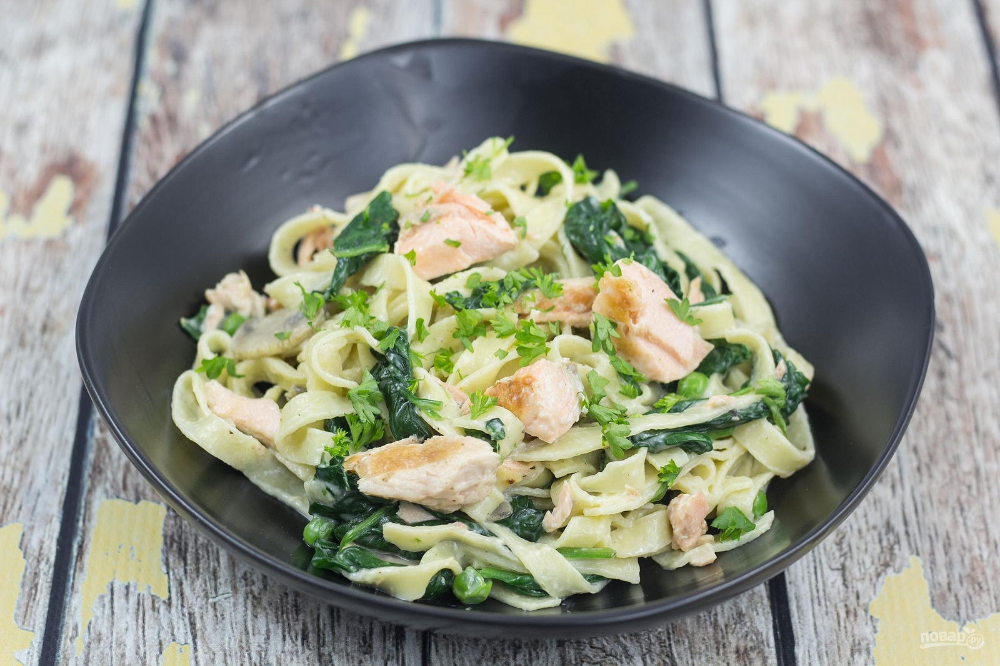 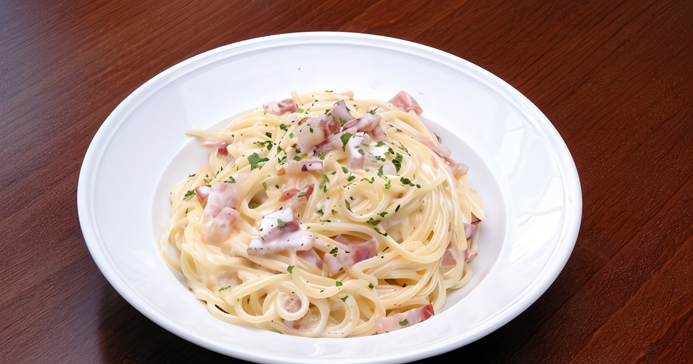 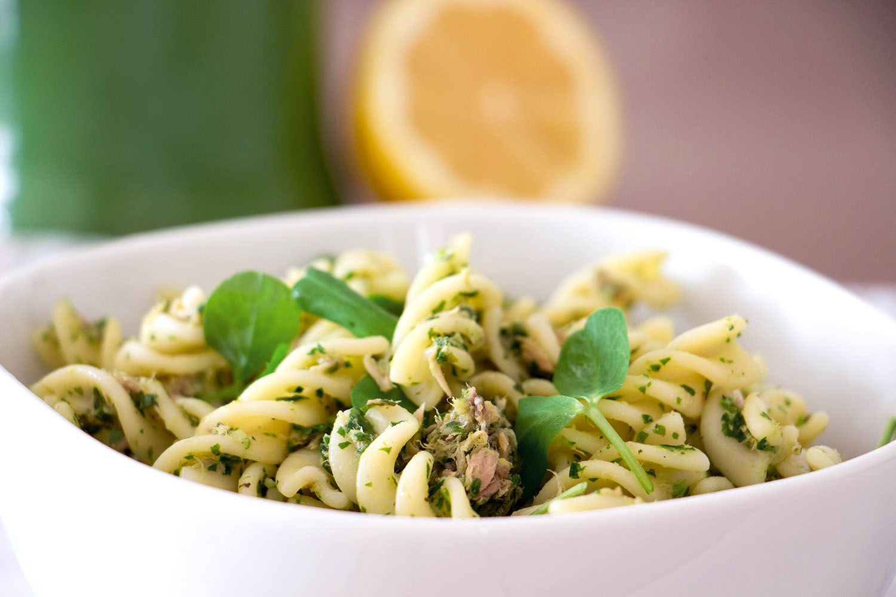
Паста «Карбонара» — популярное блюдо итальянской кухни. Это спагетти с кусочками гуанчиале (сыровяленые свиные щёки), смешанные с соусом из яиц, сыра пармезан, соли и свежемолотого чёрного перца.
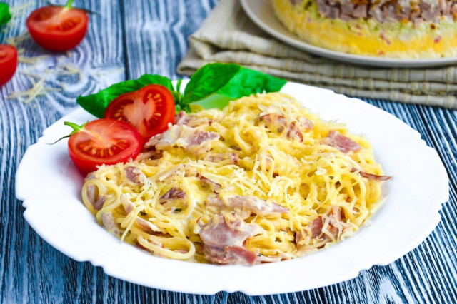
| спагетти | бекон или ветчина | сливоки 30–33% | желток | сыр пармезан | зубчика чеснока | соль, перец | растительное масло |
| 200 г | 150 г | 150 мл | 3 ШТ | 50 г | 2–3 зубчика | по вкучу | 1 стол ложка |
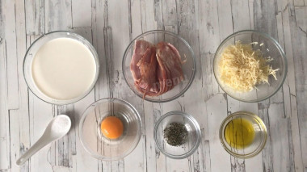
Как сделать макароны карбонара с беконом? Для начала сварите спагетти. Лучше готовить их одновременно с соусом, чтобы все оставалось горячим. То есть как только поставите вариться макароны, тут же начинайте готовить соус. Тонкости выбора и приготовления спагетти читайте в отдельной статье. Ссылка есть в конце рецепта.
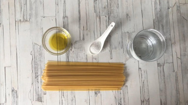
Налейте воду в подходящую по объему кастрюлю, поставьте на плиту и доведите до кипения. Можно сразу использовать кипящую воду из чайника, это ускорит процесс варки. Если накрыть кастрюлю крышкой, вода закипит быстрее. Добавьте соль. Опустите в воду спагетти таким образом, чтобы они не ломались. Нижняя их часть после намокания станет мягкой, что позволит погрузить в воду макароны по спирали. Варите пасту в кипящей воде 6-8 минут
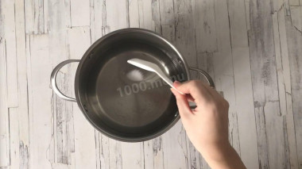
Сколько и как правильно варить макароны (пасту)? В классическом виде паста должна быть в состоянии аль денте, полуготовая, слегка твердая внутри. Время ее варки очень зависит от состава и производителя. Обычно на упаковке указано примерное время варки - ориентируйтесь на него. Слейте воду через дуршлаг, а пасту сбрызните оливковым маслом и перемешайте. Можно накрыть кастрюлю крышкой, если соус к этому времени не готов.
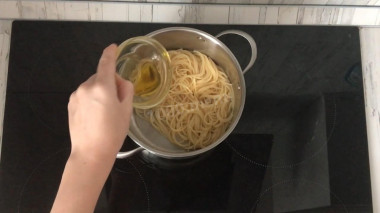
Подготовьте продукты для соуса. Какие сливки лучше брать? Я беру сливки 20% жирности, это сделает соус более нежным, сливочным. Травы - итальянская смесь в идеале. Если под рукой таких нет, можно взять свою любимую смесь приправ. Или ограничиться сушеным розмарином и базиликом.
Как нарезать бекон? Ломтики бекона нарежьте на кусочки квадратной формы. Подогрейте на сковороде масло и обжарьте бекон до золотистого цвета на среднем огне, помешивая все лопаточкой. При желании оливковое масло можно заменить любым другим. Следите, чтобы на сковороду не попала влага, иначе масло станет шипеть. Если жир с бекона стал потрескивать и брызгаться, убавьте огонь. как выбрать сковороду и масло читайте в статьях на эти темы в конце рецепта.
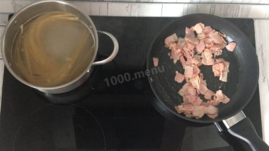
Влейте на сковороду сливки, перемешайте. Если до этого убавляли огонь, верните его на средний. Тушите все, помешивая, в течение одной минуты.
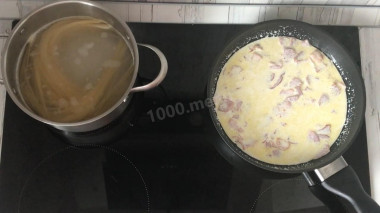
Добавьте в соус итальянские травы, молотый перец и соль. Перемешайте.
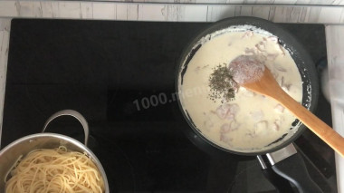
Выложите в сковороду пасту и осторожно перемешайте. Подержите на огне блюдо около одной минуты, чтобы все хорошо прогрелось. Снимите сковороду с плиты.
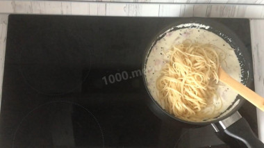
Добавьте в макароны карбонара сырой желток и быстро перемешайте так, чтобы желток разошелся по всему блюду. Тут у вас могут возникнуть сомнения в использовании сырого желтка. Если вы не уверены в его качестве и хотите оставаться спокойными, этот шаг можете пропустить. Разложите пасту карбонара по тарелкам, посыпьте тертым сыром пармезан по вкусу. Украсьте блюдо листочком свежего базилика и дольками помидоров черри.
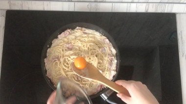
Вверх